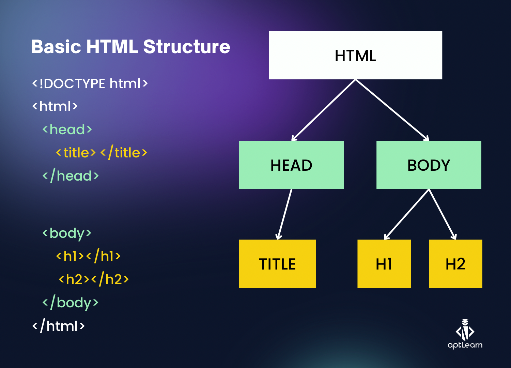
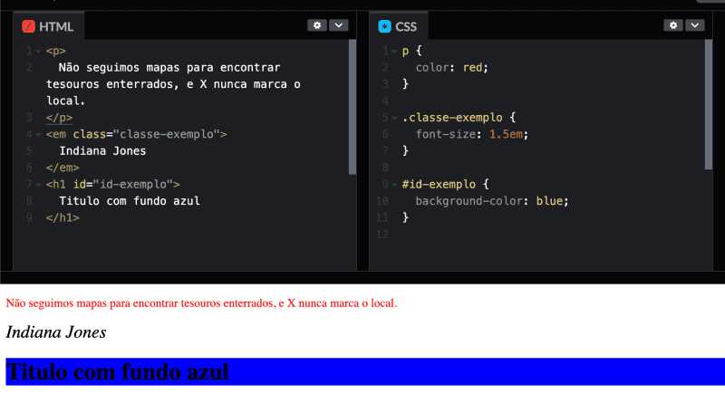

A criação de um site começa com a estruturação de um documento HTML, que define o layout e o conteúdo da página. A seguir, explicamos os principais comandos utilizados na construção de um site básico.
HTML (HyperText Markup Language) é a linguagem usada para estruturar o conteúdo na web. Aqui estão alguns dos principais comandos HTML:
<html>: Define o início e o fim de um documento HTML.
<head>: Contém metadados como o título e links para folhas de estilo.
<body>: Contém todo o conteúdo visível do site, como texto, imagens e links.
O CSS (Cascading Style Sheets) é utilizado para estilizar e formatar a aparência dos elementos HTML. Alguns dos comandos CSS mais utilizados incluem:
font-size: Define o tamanho da fonte do texto.
color: Define a cor do texto.
background-color: Define a cor de fundo de um elemento.
